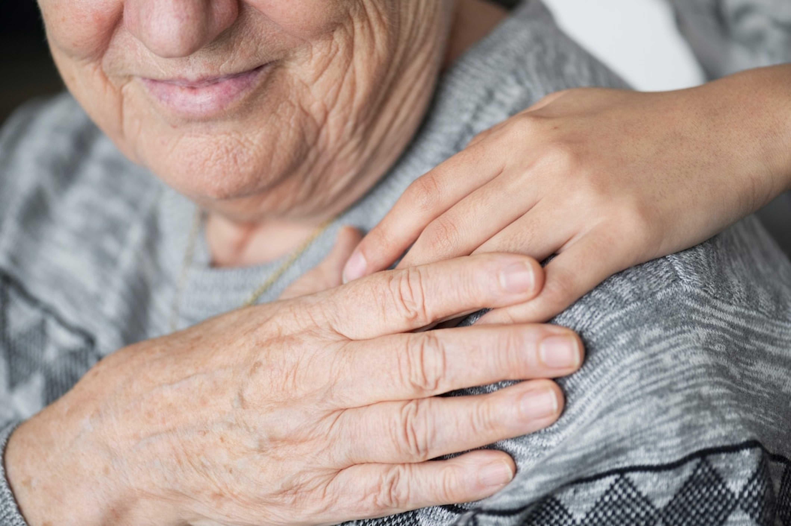

Cuidado paliativo
La formación de auxiliares de enfermería en cuidado paliativo es incipiente y
se observa que aún es invisible una competencia formal en CP. La formación en
CP para los auxiliares de enfermería resulta una ganancia para el estudiante
quien aprende a aceptar la muerte a manejar la frustración, respetar al paciente
en su contexto individual, social, familiar, cultural y a ser un apoyo hasta el
final de la vida. Todas estas competencias y actitudes aprendidas son útiles para
el ejercicio como técnico en cualquier campo, incluso para su vida personal.
Saber mas
Apoyo diagnóstico en laboratorio clínico
El presente diplomado busca actualizar al personal auxiliar en enfermería y profundizar
en el procedimiento de toma de muestras de laboratorio y apoyo en el procesamiento de
la misma, partiendo de la normativa vigente y teniendo en cuenta los aspectos relacionados
con la bioseguridad, asepsia y antisepsia, preparación de la piel, almacenamiento, transporte
de muestras, procesamiento, precauciones y cuidados generales del procedimiento.
Saber mas
Atención integral en salud a víctimas de violencia sexual
La violencia sexual es una problemática en todo el mundo, la cual trae consigo grandes
secuelas como el embarazo, las enfermedades de trasmisión sexual, las ideaciones o intentos
suicidas, el señalamiento social y el estrés postraumático. Se constituye en una problemática
de salud pública por su magnitud y las afectaciones que produce en la salud física, mental y social.
En las últimas décadas ha sido reconocida como una violación de los derechos humanos,
sexuales y reproductivos que vulnera la dignidad humana, la integridad, libertad, igualdad y
autonomía, entre otros. Lo que significa que la víctima tendrá grandes implicaciones que deben
ser atendidas de forma integral por un equipo interdisciplinar de salud capacitado.
Saber mas
Cuidadores de personas mayores y con dependencia

La Escuela de Administración y Formación en Salud ESAF ha desarrollado el diplomado
de Cuidadores de personas mayores y con dependencia, a través de una formación multidisciplinar
con la participación de profesionales especializados en el cuidado a menores de edad, personas mayores,
personas que sufren de algún tipo de enfermedad que se encuentran en condición de discapacidad o dependencia.
Saber mas
Quiromasaje y técnicas manuales
El país, como destino líder muestra ventajas comparativas como sus dos océanos, la riqueza de aguas continentales, 310 fuentes termales, 30 de ellas con alto potencial para convertirse en centros de bienestar, costos competitivos, bellos y exóticos paisajes, y la amabilidad de los habitantes y la calidad de la formación de su talento humano en terapias tradicionales y ancestrales, y el aprovechamiento de la flora y la fauna para uso estético y de relajación, protegiendo el medio ambiente.
Es así como la Escuela de Administración y Formación en Salud –ESAF reconociendo estas ventajas comparativas de nuestro país, ha propuesto el diplomado de quiromasaje y técnicas manuales formando talento humano competente y de calidad para participar en los centros de Bienestar en cualquiera de sus modalidades.
Saber mas
Buenas prácticas de seguridad del paciente
Colombia impulsa una Política de Seguridad del Paciente, liderada por el Sistema Obligatorio
de Garantía de Calidad de la Atención en Salud, cuyo objetivo es prevenir la ocurrencia de
situaciones que afecten la seguridad del paciente, reducir y de ser posible eliminar la ocurrencia
de Eventos adversos para contar con instituciones seguras y competitivas internacionalmente.
Saber mas
Cuidado integral en hospitalización domiciliaria
Continúe preparándose con los programas de Actualización y Desarrollo técnico-laboral de
la Escuela de Administración y Formación en Salud –ESAF. Ofrecemos diversos programas
en modalidad semipresencial y virtual, efectivos, prácticos y flexibles, de acuerdo con
sus necesidades de actualización y disponibilidad de tiempo, diseñados para desarrollar a
la persona y a las empresas para enfrentar el entorno cambiante y complejo.
Facturación, glosas y auditoría de cuentas médicas

La auditoría de facturación es un proceso organizado que se lleva a cabo para examinar y evaluar
la efectividad y confiabilidad de la documentación generada en el proceso de facturación de la prestación
de los servicios de salud y realizar las glosas para corregir el error y mejorar el proceso de facturación.
Saber mas
Farmacia homeopática
"Con el fin de evitar los medicamentos que pueden traer químicos o componentes diferentes para
el organismo”.
Saber mas
Estrategias pedagógicas para la inclusión y la resiliencia
Mediante la implementación del diplomado “Estrategias Pedagógicas para la Inclusión y la Resiliencia”
pretendemos ratificar la postura del respeto a la diversidad y reconocer la importancia del agente
educativo dentro de los procesos de enseñanza y aprendizaje inclusivos y pertinentes, pues es él, quien,
partiendo de las necesidades de la población, debe diseñar un ambiente significativo y propicio, que responda
a las necesidades de todos. De este modo cambiamos el pensamiento que es el estudiante quien se debe acoplar a
los ambientes educativos; sino que la comunidad educativa quien lo acoge y apoya a través de estrategias pedagógicas
y sociales de inclusión
Saber mas